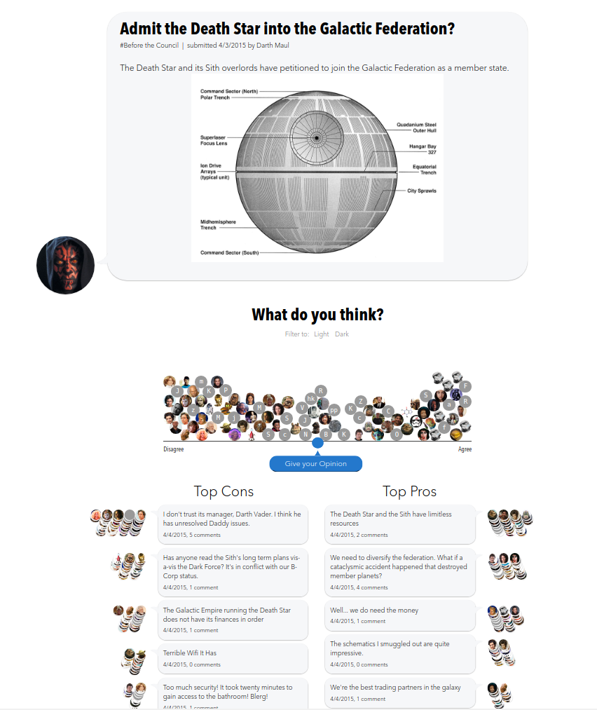
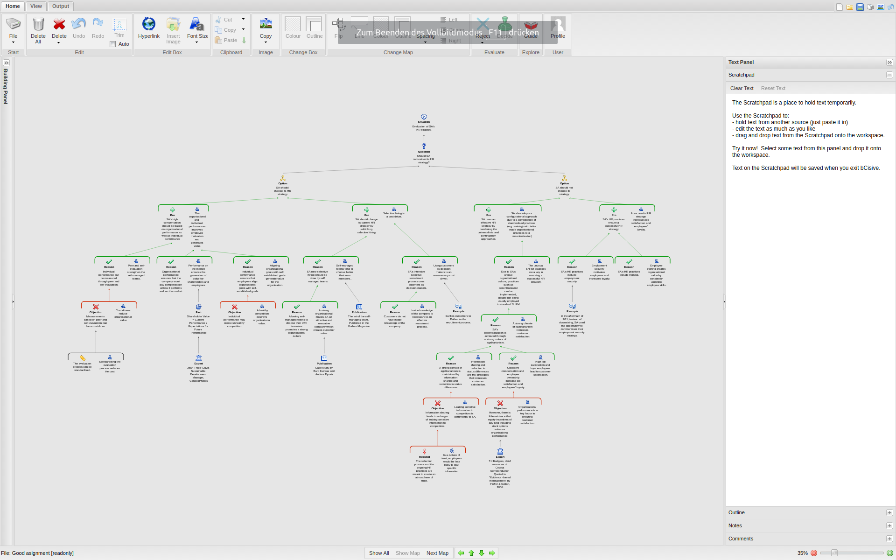

Dive Deep into Argumentation Theory
Track: Artificial Intelligence
code.talks Hamburg, 18th Oct 2018
Created by Dr. Tobias Krauthoff (tobias.krauthoff@metronom.com)
Who am I?
- Full-Stack Magican at METRO|NOM
- Former (board)-member of the:
- Graduation School on Online Participation
- Düsseldorf Institut for Internet and Democracy
- PhD in computer science (dialog-based online argumentation)
IBM Project Debater
https://www.research.ibm.com/artificial-intelligence/project-debater/Why this talk?
- How does this machine works?
- How does argumentation works?
- How far is the research on the field of ML and AI?
Let's start small
- Online participation processes do not always work
- Interaction of the participants is a key elements
- Participants are not practiced in (online) reasoning
- Large number of discussion participants
- And what's about argumentation theory?
Argumentation Theory?
- Interdisciplinary study
- Use of arguments
- Logic and rhetoric
- Origins in epistemology
- Many kinds of argumentation
Offline
- Often face-to-face or in small groups
- Use of gestures, mimics, tone
- Tied to some physical placement or at least some time
Online
- Independent of time and place
- Address large number of participants
- Multiple solutions to manage discussions
Advantages vs Disadvantages of Online Discussions
|
|
|
Current Approaches: Forum
Software: phpBB 3.2
Current Approaches: Pro & Contra Lists
Software: ConsiderIt
Current Approaches: Argumentation Maps
Software: bCivise
Idea
- Simulate a real world discussion online?
- Build a system which is a representative off users that already participated
- Input of other users are the base of new discussion
- Conducting a dialog with a current user
Connect that idea with argumentation theory?
Which kind of argumentation theory?- Deductive argumentation?
- Probabilistic reasons?
- Defeasible reasons?
Is it usable for unskilled participants?
Let's take it easy




Dialog-Based Argumentation System
D-BAS https://dbas.cs.hhu.de
Where is the theory?
- Display
- Bootstrap
- Feedback
- Navigation
- Input
- Practical use of argumentation theory and maps!
Theory basics: abstract argumentation
Let $\left(A,D\right)$ be an AF. $\forall X \in A, X$ is acceptable with respect to some $S \subseteq A$ iff $\forall Y$ s. t. $(Y,X) \in D \Rightarrow \exists Z \in S$ s. t. $(Z,Y) \in D$.Let $S \subseteq A$ be conflict free , i.e. there are no $A,B \in S$ such that $(A,B) \in D$. Then:
- S is an admissible extension iff $X \in S$ implies $X$ is acceptable w. r. t. $S$;
- S is an complete extension iff $X \in S$ whenever $X$ is acceptable w. r. t. $S$;
- S is a preferred extension iff it is a set inclusion maximal complete extension;
- S is the grounded extension iff it is the set inclusion minimal complete extension; and
- S is a stable extension iff it is preferred and $\forall Y \notin S, \exists X \in S$ s. t. $(X,Y) \in D$.
Not usable for unskilled participants!
The easy appraoch
- Practical approach
- Arguments & statements
- Three attacks and one support
And now?
- Embedding structured discussions in any website
- Using D-BAS as execution platform for social bots
- Network of argument providers
IBM Debater
- Data: Corpus of ~300M articles
- Corpus cleaning
- Indexing & analysis
- Knowledge Graph
- Debate & rebuttal construction
- But it is not open source and has no platform
Any questions?
D-BAS (https://dbas.cs.hhu.de) & discuss (https://discuss.cs.hhu.de)
 https://github.com/hhucn/discuss
https://github.com/hhucn/discuss
Dr. Tobias Krauthoff (tobias.krauthoff@metronom.com)